HUMANOS
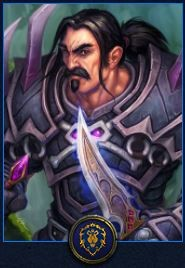
Los Humanos de Ventormenta son uno de los reinos humanos supervivientes del Azote de la Plaga de muertos liderados por el Caballero de la Muerte Arthas Menethil durante la Tercera guerra. Al ser el reino más sureño de los humanos, los No-muertos apenas llegaron. Su Capital Ventormenta es actualmente el bastión humano más importante situado en el Bosque de Elwynn, liderado por el Rey Anduin Wrynn. Los Humanos son una de las razas más versátiles pudiendo ser guerrero, paladín, brujo, sacerdote, mago, pícaro, caballero de la muerte, cazador y monje.
ORCOS
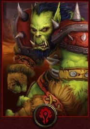
Los Orcos de Orgrimmar viven en su mayoría dentro de su capital Orgrimmar situada en las áridas tierras de Durotar, al este de Kalimdor. Durante mucho tiempo comandados por Thrall, actualmente su líder es Vol'jin, de La tribu Lanza Negra (Anteriormente era Garrosh Grito Infernal, pero fue derrocado en el Asedio de Orgrimmar por los rebeldes con el motivo de terminar el baño de sangre innecesario). Originariamente proceden de Draenor, donde fueron utilizados por Mannoroth para beber de su sangre y hacer guerra contra los Draenei (quienes habían huido de su mundo) y emigraron a Azeroth a través del Portal Oscuro para empezar una larga guerra contra los Humanos. Son de fuertes creencias chamanísticas. Más tarde, y ya bajo el mandato del Jefe de Guerra Thrall, fueron a Kalimdor, guiados por la profecía de Medivh y allí se aposentaron. Tras el cataclismo, su líder Thrall abandonó su cargo de líder de la Horda para unirse como chamán al Anillo de la Tierra, nombrando líder en su ausencia a Garrosh. Pueden ser guerrero, pícaro, brujo, chamán, cazador, caballero de la muerte, mago y monje.
ENANOS
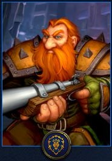
Los Enanos de Forjaz viven en las heladas tierras de Dun Morogh principalmente refugiados en su capital. Recientemente abandonaron la senda de la minería para concentrarse en la arqueología y descubrir sus orígenes. Son uno de los tres clanes que se escindieron tras la guerra de los Tres Martillos, otro de los clanes es enemigo, y el tercer y último dota de grifos a la Alianza. Su líder era Magni Barbabronce, pero tras un ritual que salió mal y que le convirtió en una estatua de diamante, el gobierno de Forjaz ha sido asumido por el Concilio de los Tres Martillos, formado por Muradin Barbabronce, Moira Thaurissan y Falstad Martillo Salvaje. Pueden ser guerrero, pícaro, sacerdote, cazador, paladín, caballero de la muerte, chamán, mago, brujo y monje.
NO-MUERTOS
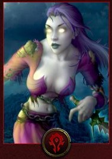
Los No-muertos Renegados de Entrañas ya no forman parte de la Plaga y viven en lo que queda de la antigua ciudad humana de Lordaeron, donde fundaron su capital Entrañas liderada por Sylvanas Brisaveloz. Se revelaron cuando el Rey Exánime perdió el control sobre ellos tras la caída de Lordaeron y el ataque de Illidan Tempestira a la Corona de Hielo. Desde entonces se hacen llamar Los Renegados. Tienen una estrecha colaboración con los Elfos de Sangre por la proximidad de sus capitales y porque su líder, la Dama Oscura, antes de ser transformada en un alma en pena por Arthas en el ataque a la Fuente del Sol, era la general forestal de Quel'thalas, la antigua zona Principal de los Elfos de Sangre. Pueden ser mago, brujo, sacerdote, pícaro, guerrero, caballero de la muerte, cazador y monje.
ELFOS DE LA NOCHE
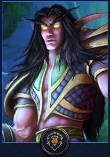
Los Elfos de la noche de Darnassus son una noble raza liderada por Tyrande Susurravientos y desde Cataclysm junto a Malfurion Tempestira, hermano mayor de Illidan, basada en la comunión con la naturaleza, se asientan en el tronco del gran árbol Teldrassil, donde ha surgido una gran ciudad (Darnassus). Tras la destrucción del árbol de la vida Nordrasil, los Elfos de la Noche perdieron la inmortalidad y se unieron a la Alianza. Pueden ser guerrero, druida, cazador, sacerdote, pícaro, caballero de la muerte, mago, monje y cazador de demonios.
TAUREN
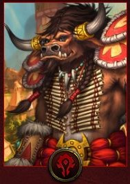
Los Tauren de Cima del Trueno son criaturas enormes y bestiales que viven en las llanuras herbosas del centro de Kalimdor. Viven para servir a la naturaleza y mantener el equilibrio entre las criaturas salvajes de la tierra y los espíritus inquietos de los elementos. A pesar de su tamaño enorme y fuerza bruta, los Tauren han creado una sociedad tribal pacífica. Sin embargo, cuando hay un conflicto, son enemigos implacables que harán uso de toda su fuerza para aplastar a sus oponentes con sus pezuñas. Su líder era Cairne Pezuña de Sangre, hasta que este murió en un duelo contra Garrosh que fue amañado en secreto por Magatha Tótem Siniestro. Desde entonces, el líder de los tauren es Baine Pezuña de Sangre. Fueron los primeros aliados de Thrall y sus orcos, al llegar estos a Kalimdor y fueron socorridos de sus enemigos, los centauros, por estos. Pueden ser guerrero, chamán, druida, cazador, caballero de la muerte, paladín, sacerdote y monje.
GNOMOS
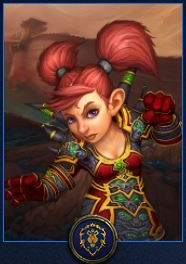
Los Gnomos de Gnomeregan de son una raza inquieta y creadores de infinidad de inventos. Durante años, estuvieron en constante lucha con los Trogg para recuperar su antigua capital Gnomeregan, hasta la llegada del Cataclísmico, cuándo por fin lograron recuperarla. Su líder es el Manitas Mayor Gelbin Mekkatorque y, pueden ser guerrero, pícaro, mago, brujo, caballero de la muerte, sacerdote y monje.
TROL
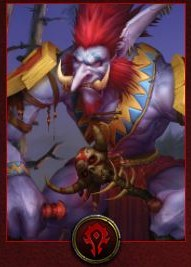
Los Troles Lanza Negra de Islas Eco y Trol sañadiente de poblado sañadiente son una raza muy antigua de Azeroth. (de ella proceden los conocidos Elfos de la Noche) Lucharon durante muchos siglos contra los Humanos. Tienen una profunda fe en el Vudú. Actualmente solo las tribus Lanza negra y Sañadiente forman parte de la Horda, pues las demás tribus viven independientemente. Compartían ciudad con los Orcos de Orgrimmar, pero recientemente han recobrado su hogar en las islas del Eco, tras luchar con Zalazane. Conservan un poblado al sur de Durotar llamado Sen'Jin. Su líder es Vol'Jin. Pueden ser guerrero, sacerdote, mago, cazador, chamán, pícaro, caballero de la muerte, druida, brujo y monje.
DRAENEI
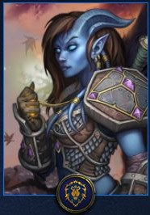
Los Draenei de El Exodar son introducidos en World of Warcraft: The Burning Crusade. Su nave El Exodar cayó y se estrelló en las Islas de la bruma al oeste de Kalimdor. Tienen fe en los Naaru, unos seres de luz muy poderosos. Son encarnizados enemigos de la Cruzada Ardiente y proceden del Planeta Argus (en la actualidad este planeta es el bastión de la Legión Ardiente) su capital es El Exodar, que son los restos de la nave estrellada. Antiguamente formaban parte de la raza Eredar de la cual se corrompió por la Legión. Su líder es Velen el Profeta. Pueden ser guerrero, mago, sacerdote, cazador, paladín, chamán, caballero de la muerte y monje.
ELFOS DE SANGRE
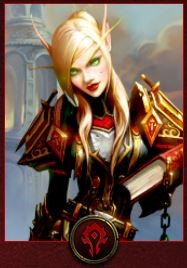
Los Elfos de Sangre de Lunargenta son introducidos en World of Warcraft: The Burning Crusade, son lo que queda de los Altos Elfos tras el paso de la Plaga por Quel'thalas y la consiguiente destrucción de la Fuente del Sol. Al no tener una fuente de magia, comenzaron a tener una sed de Maná (esencia mágica). Aquellos que sucumben a su adicción al maná, acaban transformándose en Desdichados, una especie de zombis salvajes. Su fuente de magia fue restaurada al final de The Burning Crusade, cuando su antiguo príncipe Kael'thas los traicionó y utilizó la fuente para traer a Azeroth a Kil'jaeden, una vez derrotado éste Velen usó el corazón de un viejo guerrero Naaru para purificarla. Su príncipe era Kael'thas Caminante del Sol, pero, como Kael'thas traicionó a su pueblo, su nuevo líder es Lor’themar Theron. Pueden ser paladín, mago, brujo, sacerdote, pícaro, cazador, caballero de la muerte, guerrero, monje y cazador de demonios.
HUARGEN
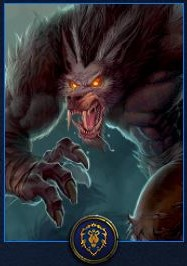
Los Huargen de Gilneas son introducidos en World of Warcraft: Cataclysm.2 Los ferocanis o huargens, son hombres lobo que el archimago Arugal del Castillo Colmillo Oscuro usó como armas contra la Plaga. Su maldición originada por druidas que intentaron dominar la forma de lobo se extendió entre los humanos transformándolos en bestias. El Reino de Gilneas, liderado por Genn Cringris, al sur del bosque de Argénteos, fue afectado por esta maldición, maldición que con la ayuda de los druidas elfos de la noche han aprendido a controlar, recuperando su humanidad a voluntad. ueden ser guerrero, cazador, pícaro, sacerdote, caballero de la muerte, druida, mago y brujo.
GOBLIN
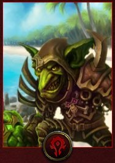
Los Goblins de Kezan son Introducidos en World of Warcraft: Cataclysm.2 En el pasado fueron esclavos de los trolls en la Isla de Kezan, quienes los obligaban a extraer un extraño metal llamado Kajamita que los Trolls usaban en sus rituales, el contacto prolongado con la Kajamita les dio gran inteligencia y lograron liberarse del dominio Troll. Debido al Cataclismo, el Cartel Pantoque abandona Kezan. Por culpa del IV:7 de la Alianza, naufragan en las Islas Perdidas, donde se verán atrapados en las luchas entre la Alianza y la Horda, tomando partido por la Horda para sobrevivir. Tras colaborar en el rescate del antiguo jefe de guerra Thrall, los goblins de Kezan se unen definitivamente a la Horda, fundando una ciudad goblin, Puerto Pantoque, en el reino de Azshara al norte de Orgrimmar. El resto de facciones goblin tradicionales se mantienen en posición neutral. Pueden ser guerrero, pícaro, cazador, mago, sacerdote, caballero de la muerte, brujo y chamán.
 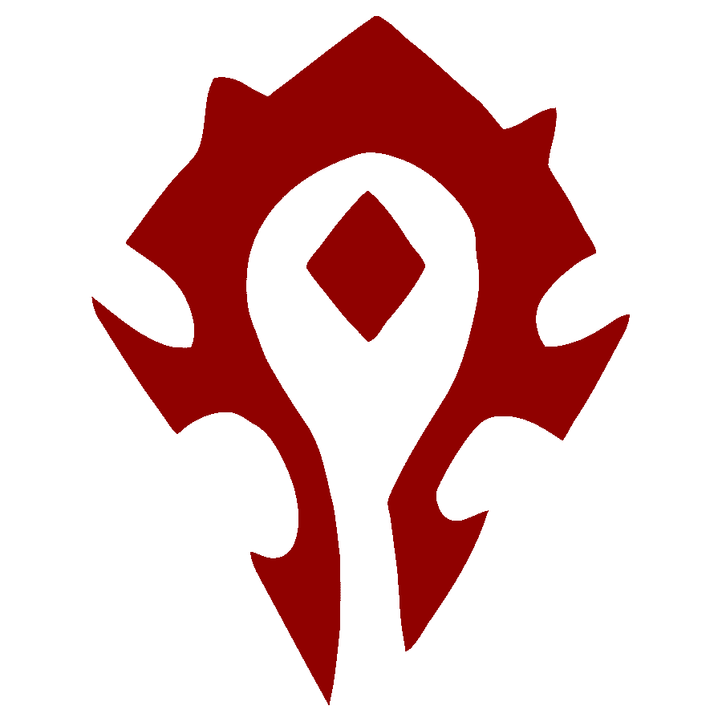
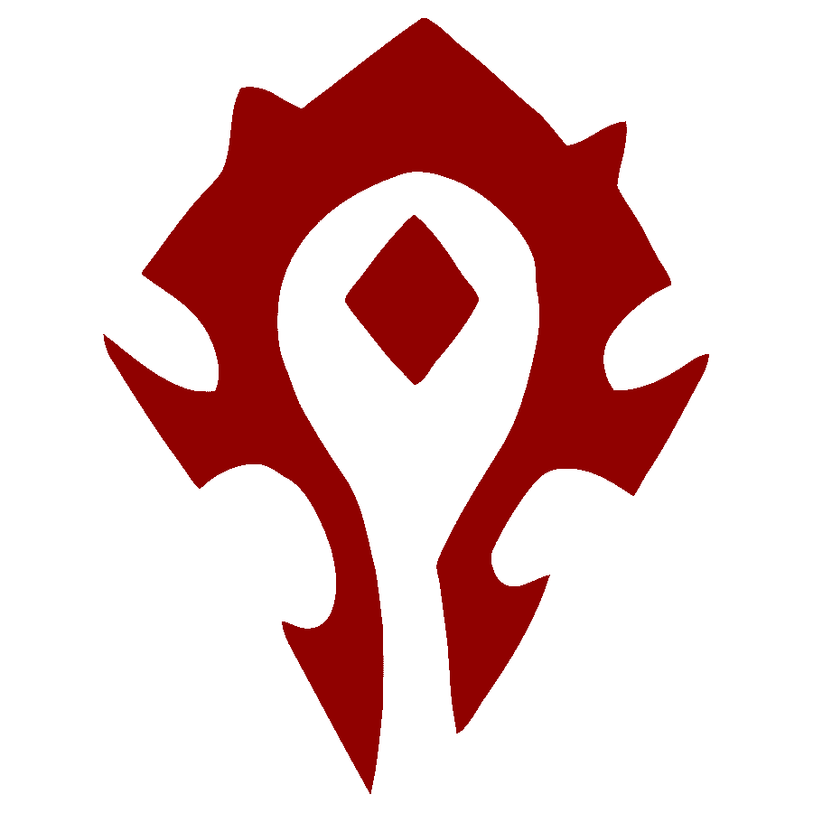